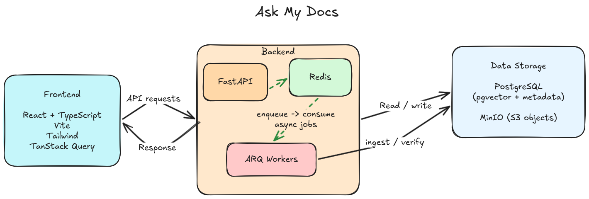

The Challenge
The AI ecosystem is heavily saturated with "one-line RAG" solutions using LangChain or LlamaIndex. While useful for rapid prototyping, these frameworks often obscure the critical parts of the pipeline: chunking logic, retrieval weighting, and latency bottlenecks.
I built Ask My Docs to regain full architectural control. The goal was to create a platform where retrieval algorithms and chunking strategies could be swapped and measured systematically, ensuring that performance and result quality are driven by data, not framework defaults.
Architecture Deep Dive
The platform is built on a modular backend that prioritizes the separation of concerns between data ingestion and query execution.

Click to zoom. This system map illustrates the modular ingestion pipeline and the hybrid retrieval engine powered by PostgreSQL.
1. Async Ingestion Pipeline
Ingesting thousands of documents requires a robust background worker system. I used FastAPI paired with ARQ (Redis-backed task queue). Each stage— parsing, chunking, embedding, and indexing—is an independent, idempotent task with its own retry logic and telemetry.
2. Hybrid Retrieval with PostgreSQL
Semantic search (vectors) is powerful but often fails on domain-specific keywords and acronyms. I implemented a Hybrid Retrieval system using vanilla PostgreSQL to balance semantic breadth with keyword precision, incorporating the BM25 search algorithm ranking logic for optimal relevance:
- pgvector (HNSW index): For high-dimensional semantic similarity.
- tsvector (GIN index): For traditional full-text keyword search with BM25-informed ranking.
Results are combined using a configurable weighting system, allowing the retrieval strategy to be tuned specifically to the document corpus.
3. Immutable Run Model
To make architectural experiments scientific, I implemented an Immutable Run Model. All ingestion parameters (chunk size, overlap, model version) are frozen for a "Run." Changing a strategy triggers a new Run, ensuring that every query's performance is traceable back to a specific, immutable set of engineering decisions.
Strategic Decisions
I chose PostgreSQL with pgvector instead of Pinecone or Milvus. For most
mid-scale applications, the operational simplicity of a single database that handles
metadata, full-text, and vectors outweighs the marginal performance gains of a specialized
vector store. It also allows for complex relational filtering during retrieval.
Chunks are identified by their content hash. This prevents duplicate embeddings when the same document is re-uploaded or when chunks overlap across different documents, significantly reducing embedding costs and storage.